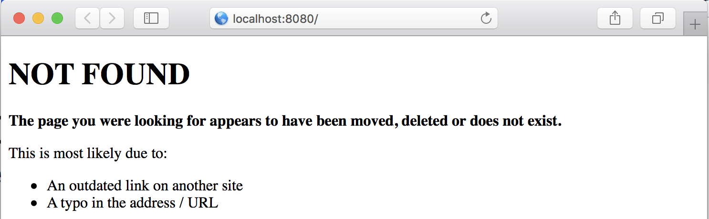
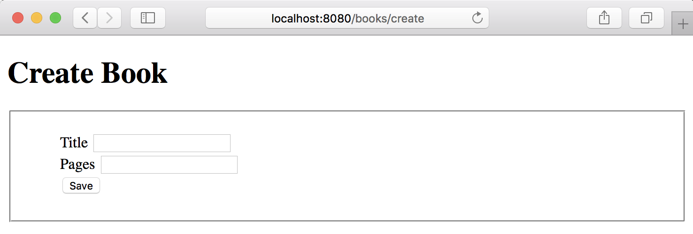
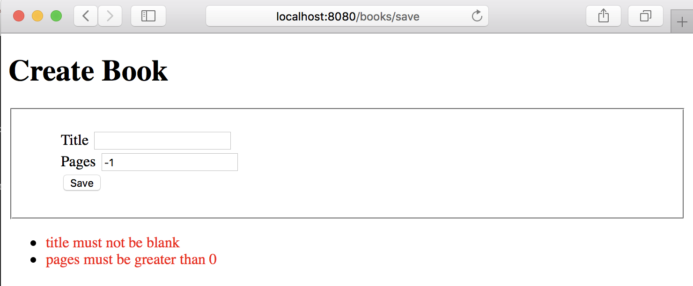

Error Handling
Learn about error handling in the Micronaut framework.
On this guide
In this section
Getting Started
In this guide, we will create a Micronaut application written in Kotlin.
What you will need
To complete this guide, you will need the following:
-
Some time on your hands
-
A decent text editor or IDE (e.g. IntelliJ IDEA)
-
JDK 21 or greater installed with
JAVA_HOMEconfigured appropriately
Solution
We recommend that you follow the instructions in the next sections and create the application step by step. However, you can go right to the completed example.
-
Download and unzip the source
Writing the Application
Create an application using the Micronaut Command Line Interface or with Micronaut Launch.
mn create-app example.micronaut.micronautguide --build=maven --lang=kotlin|
Note
|
If you don’t specify the --build argument, Gradle with the Kotlin DSL is used as the build tool. If you don’t specify the --lang argument, Java is used as the language.If you don’t specify the --test argument, JUnit is used for Java and Kotlin, and Spock is used for Groovy.
|
The previous command creates a Micronaut application with the default package example.micronaut in a directory named micronautguide.
Global @Error
We want to display a custom Not Found page when the user attempts to access a URI that has no defined routes.

The views module provides support for view rendering on the server side and does so by rendering views on the I/O thread pool in order to avoid blocking the Netty event loop.
To use the view rendering features described in this section, add the following dependency on your classpath. Add the following dependency to your build file:
<dependency>
<groupId>io.micronaut.views</groupId>
<artifactId>micronaut-views-velocity</artifactId>
<scope>compile</scope>
</dependency>The Micronaut framework ships out-of-the-box with support for Apache Velocity, Thymeleaf or Handlebars. In this guide, we use Apache Velocity.
Create a notFound.vm view:
<!DOCTYPE html>
<html>
<head>
<meta charset="UTF-8">
<title>Not Found</title>
</head>
<body>
<h1>NOT FOUND</h1>
<p><b>The page you were looking for appears to have been moved, deleted or does not exist.</b></p>
<p>This is most likely due to:</p>
<ul>
<li>An outdated link on another site</li>
<li>A typo in the address / URL</li>
</ul>
</body>
</html>Create a NotFoundController:
Local @Error
Micronaut validation is built on the standard framework – JSR 380, also known as Bean Validation 2.0. Micronaut Validation has built-in support for validation of beans that are annotated with jakarta.validation annotations.
To use Micronaut Validation, you need the following dependencies:
<!-- Add the following to your annotationProcessorPaths element -->
<annotationProcessorPath>
<groupId>io.micronaut.validation</groupId>
<artifactId>micronaut-validation-processor</artifactId>
</annotationProcessorPath>
<dependency>
<groupId>io.micronaut.validation</groupId>
<artifactId>micronaut-validation</artifactId>
<scope>compile</scope>
</dependency>Alternatively, you can use Micronaut Hibernate Validator, which uses Hibernate Validator; a reference implementation of the validation API.
Then create a view to display a form:

<!DOCTYPE html>
<html>
<head>
<meta charset="UTF-8">
<title>Create Book</title>
<style type="text/css">
form fieldset li {
list-style-type: none;
}
#errors span { color: red; }
</style>
</head>
<body>
<h1>Create Book</h1>
<form action="/books/save" method="post">
<fieldset>
<ol>
<li>
<label for="title">Title</label>
<input type="text" id="title" name="title" value="$title"/>
</li>
<li>
<label for="pages">Pages</label>
<input type="text" id="pages" name="pages" value="$pages"/>
</li>
<li>
<input type="submit" value="Save"/>
</li>
</ol>
</fieldset>
</form>
#if( $errors )
<ul id="errors">
#foreach( $error in $errors )
<li><span>$error</span></li>
#end
</ul>
#end
</body>
</html>To use the serialization features described in this section, add the following dependency to your build file:
<dependency>
<groupId>io.micronaut.serde</groupId>
<artifactId>micronaut-serde-jackson</artifactId>
<scope>compile</scope>
</dependency>Create a controller to map the form submission:
Create the POJO encapsulating the submission:
When the form submission fails, we want to display the errors in the UI as the next image illustrates:

An easy way to achieve it is to capture the jakarta.validation.ConstraintViolationException exception in a local @Error handler. Modify BookController.java:
Create a jakarta.inject.Singleton to encapsulate the generation of a list of messages from a Set of ConstraintViolation:
package example.micronaut
import jakarta.inject.Singleton
import jakarta.validation.ConstraintViolation
@Singleton
class MessageSource {
fun violationsMessages(violations: Set<ConstraintViolation<*>>): List<String> {
return violations.map { violationMessage(it) }.toList()
}
private fun violationMessage(violation: ConstraintViolation<*>): String {
val lastNode = violation.propertyPath.map { it.name + " " }.lastOrNull()
return (lastNode ?: "") + violation.message
}
}ExceptionHandler
Another mechanism to handle a global exception is to use an ExceptionHandler.
Modify the controller and add a method to throw an exception:
package example.micronaut
class OutOfStockException: RuntimeException()Implement an ExceptionHandler, a generic hook for handling exceptions that occur during the execution of an HTTP request.
Generate a Micronaut Application Native Executable with GraalVM
We will use GraalVM, an advanced JDK with ahead-of-time Native Image compilation, to generate a native executable of this Micronaut application.
Compiling Micronaut applications ahead of time with GraalVM significantly improves startup time and reduces the memory footprint of JVM-based applications.
|
Note
|
Only Java and Kotlin projects support using GraalVM’s native-image tool. Groovy relies heavily on reflection, which is only partially supported by GraalVM.
|
GraalVM Installation
sdk install java 25.0.2-graalFor installation on Windows, or for a manual installation on Linux or Mac, see the GraalVM Getting Started documentation.
The previous command installs Oracle GraalVM, which is free to use in production and free to redistribute, at no cost, under the GraalVM Free Terms and Conditions.
Alternatively, you can use the GraalVM Community Edition:
sdk install java 25.0.2-graalceNative Executable Generation
To generate a native executable using Maven, run:
./mvnw package -Dpackaging=native-imageThe native executable is created in the target directory and can be run with target/micronautguide.
It is possible to customize the name of the native executable or pass additional build arguments using the Maven plugin for GraalVM Native Image building. Declare the plugin as follows:
After you run the native executable, execute a curl request:
curl -H 'Accept: text/html,application/xhtml+xml,application/xml;q=0.9,image/webp,image/apng,*/*;q=0.8' localhost:8080/fooYou should get a successful response.
<!DOCTYPE html>
<html>
<head>
<meta charset="UTF-8">
<title>Not Found</title>
</head>
<body>
<h1>NOT FOUND</h1>
....Next Steps
Explore more features with Micronaut Guides.
Help with the Micronaut Framework
The Micronaut Foundation sponsored the creation of this Guide. A variety of consulting and support services are available.
License
|
Note
|
All guides are released with an Apache License 2.0 for the code and a Creative Commons Attribution 4.0 license for the writing and media (images). |